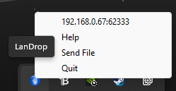

Welcome to the help page! Here, you will be able to learn how to setup and get LanDrop running.
To begin, make sure you have Python and all necessary packages installed. Included in your download should be a list of packages that must be installed through pip.
Once installed, simply double click "launch.bat" and you should see the program icon in your tray. To close, right click and select "Quit." To send a file from the host, select "Send File."
To connect and send files from an external device, note the local IP address at the top of the context menu and type it in a web browser. From there, select the file you would like to upload and press "Upload."
For more information, visit our official repo.